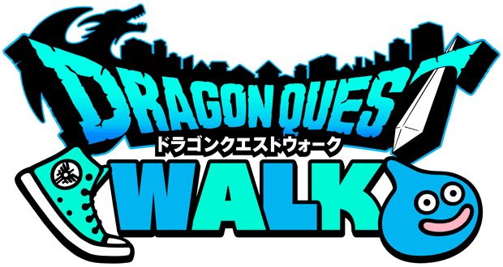

・初めまして。長野工業高等学校 2026年 情報工学科2年の山田蒼空です！
・部活動は情報工学班に所属しています。←学校で一番気楽に生活できる(実質この学校に来てる意味)
・趣味はゲームで、好きなゲームはドラクエウォークです。(現実でやってる人、見たことない。みんなやろう)
・特に好きな食べ物はサムライバーガーの炙り醤油風ダブル肉厚ビーフと寿司（特にいくら）です。

・杉の子保育園………卒園 2016年(平成28年) 3月 何も覚えていない
・下氷鉋小学校………卒業 2022年(令和4年) 3月 親友ができた
・広徳中学校…………卒業 2025年(令和7年) 3月 中3が一番楽しかった
・長野工業高等学校…在学中 2029年(令和11年) 3月(卒業予定)
・実用英語技能検定………3級合格 2回目で運良く取れた
・日本漢字能力検定………5級合格 小学校の頃は漢字が好きだった
・情報技術検定……………3級合格 2級を2年生中に絶対取る
・色彩検定2級を取得する
・情報技術検定2級取得する
・英検準2級取得する
・情報セキュリティマネジメントを取得する